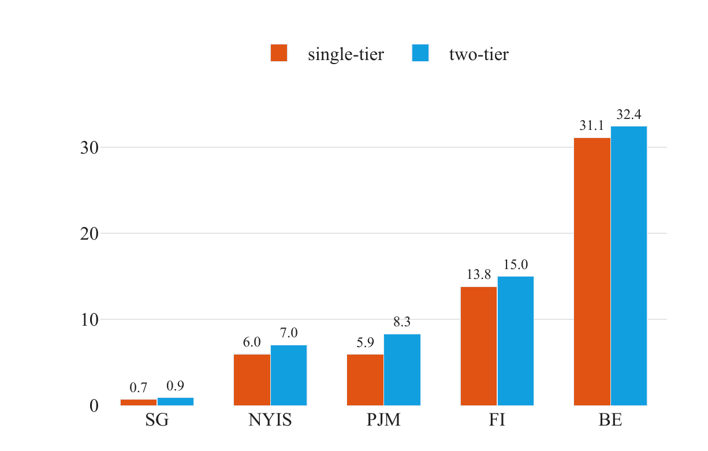
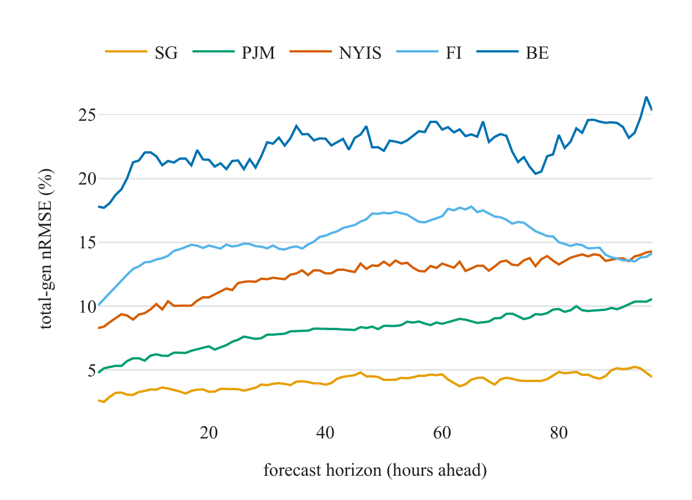
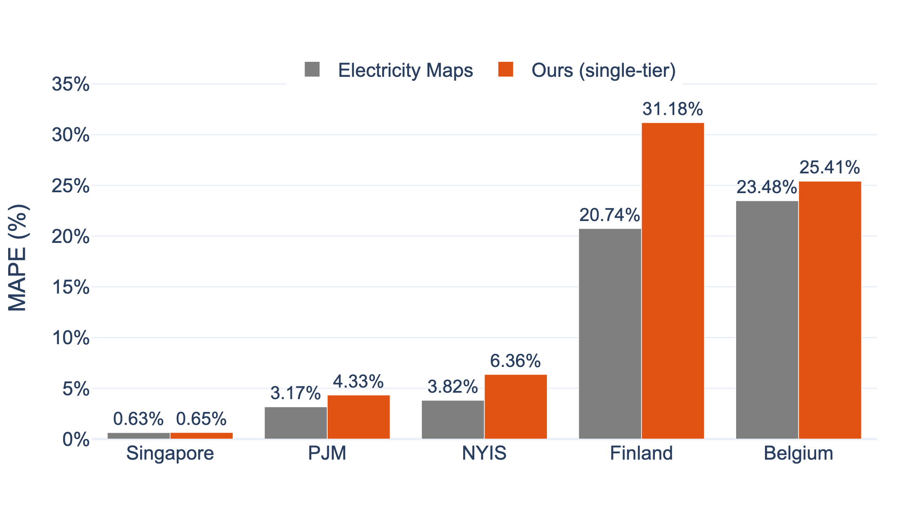

4 Headline Results — Per-Region Atlas (Test A)
| Zone |
MAPE (Test A) |
Grid character |
| Singapore |
0.71% |
Tight gas island, stable mix |
| PJM |
5.93% |
Large US market, diverse sources |
| NYIS |
5.98% |
Large US market, diverse sources |
| Finland |
12.05% |
Small, fast-decarbonizing, import-heavy |
| Belgium |
31.13%
(2024 training window) |
Distribution shift, unmodeled nuclear outages — open failure case |
Accuracy spans two orders of magnitude. Structural grid characteristics — mix stability, interconnection, decarbonization pace — explain the spread.
5 Finding 1 — Two-Tier Complexity Does Not Pay Off
Single-tier matches or beats two-tier in every zone, decisively on the consumption target.
We also reproduce CarbonCast: production two-tier PJM 6.04% vs. published 5.29%.

MAPE by zone and framework, consumption-based CI.
Orange = single-tier (ours).
Blue = two-tier.
Lower is better.
6 Finding 2 — Cross-Border Flows Do Not Help
Removing interconnector and partner-CI inputs leaves the model equal or better in four of five zones.
Belgium is actively hurt (MAPE 29.0 without flows vs. 58.5 with flows).
Why: Tier 1 flow forecasts over a 96 h horizon are noisy — they add error, not signal.
The diagnostic below shows error grows with horizon and peaks where two-tier fails most.

Tier 1 total-generation forecast error (normalized RMSE) by horizon, per zone.
Belgium error reaches 18-25%, the highest in the study — matching its worst two-tier performance.
7 Head-to-Head vs. Electricity Maps (Test B, 1-24 h)
Our open model lands within a few percentage points of the closed operational forecast, and beats it in Finland.

MAPE on Test B (Jun 8-21 2026, 1-24 h band).
Gray = Electricity Maps operational.
Orange = ours (single-tier, consumption).
Note: our model is replayed on actual weather — an optimistic upper bound.